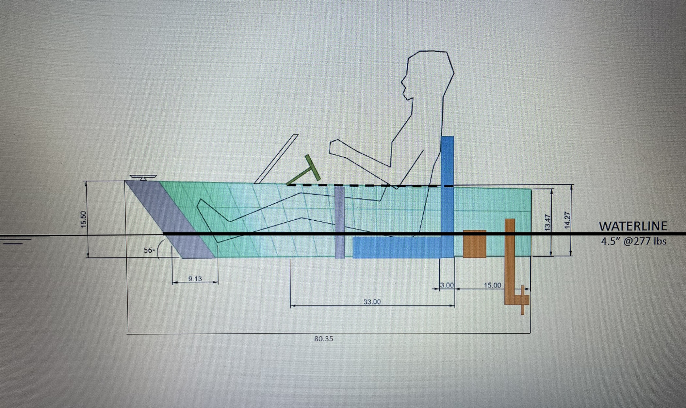
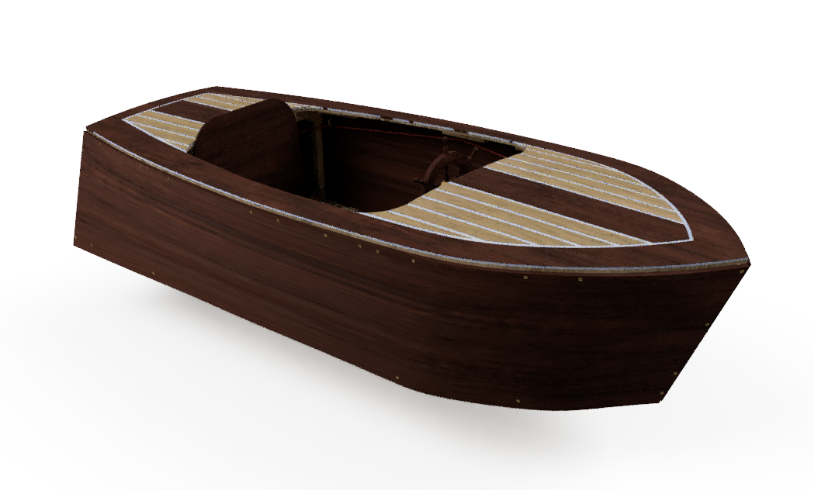
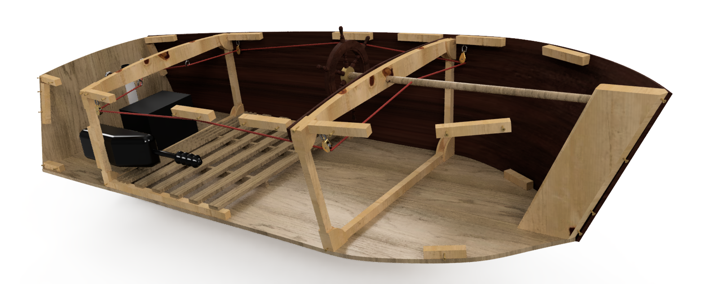
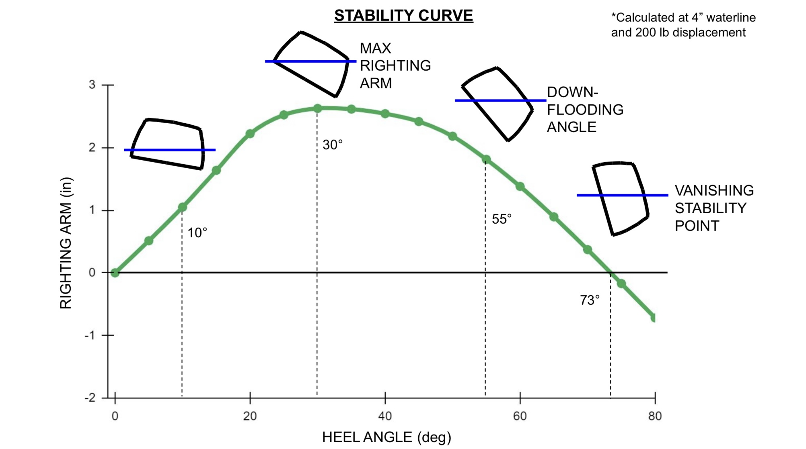
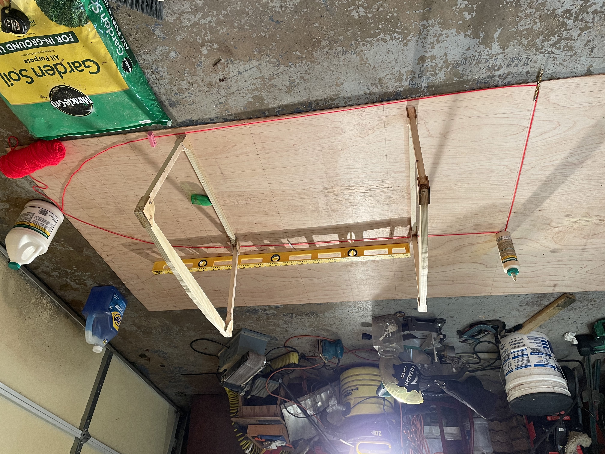
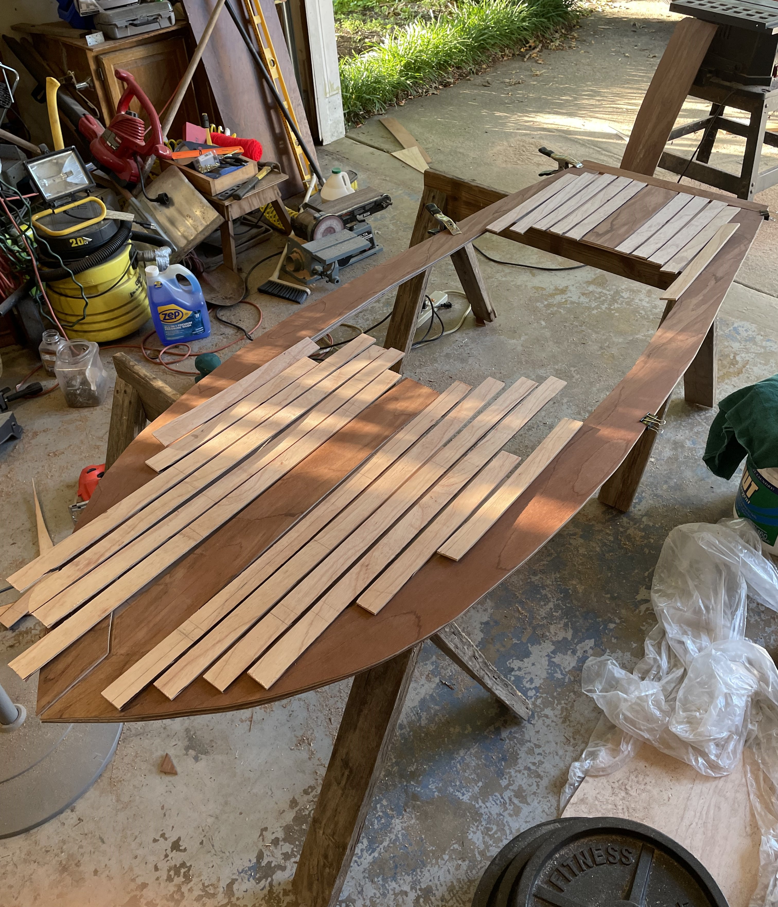
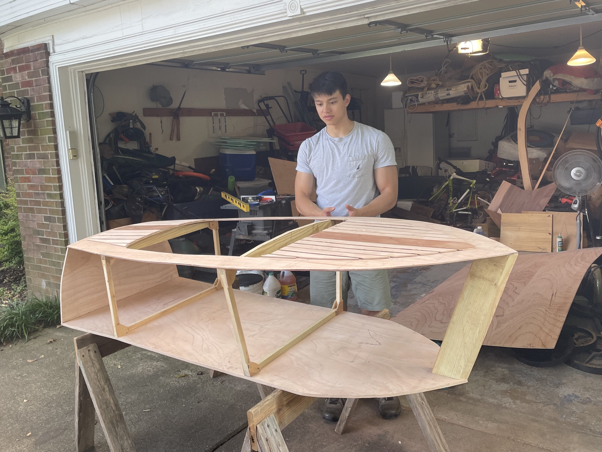
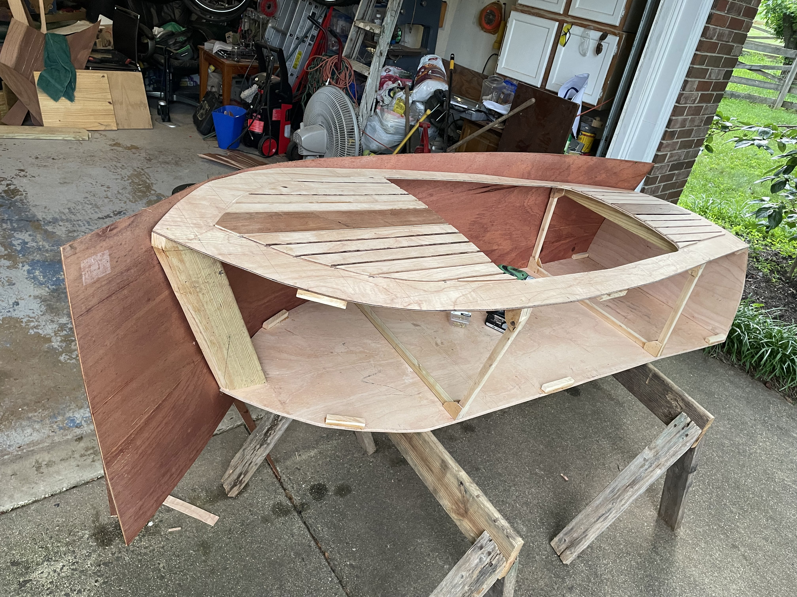
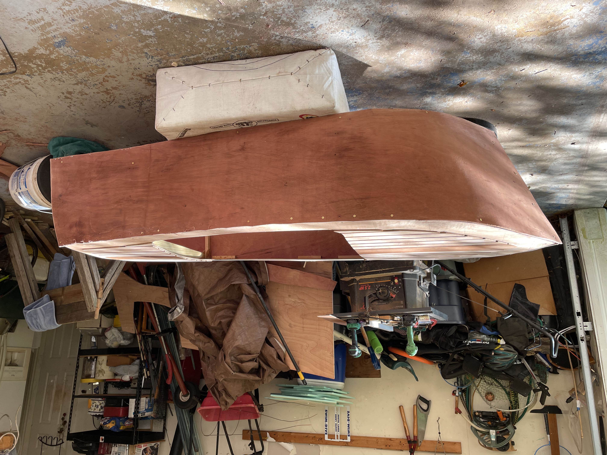
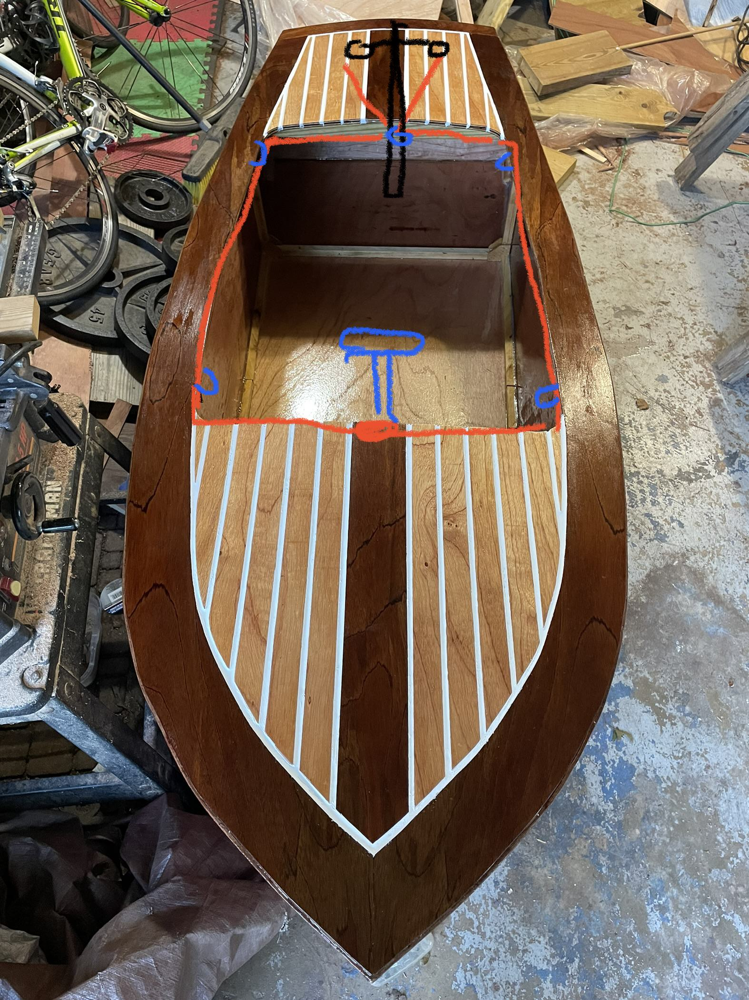

Tiny Electric Boat
A tiny electric boat I designed and built during the summer of 2022.
Video taking the mini boat out on the water.
Project Details / Background
After graduating with a degree in Ocean Engineering from Virginia Tech, I wanted to get some hands-on design experience
and put my knowledge to the test. It’s one thing to learn about naval architecture and engineering principles in class, but I wanted to
see how I could apply what I learned to a real life design. So, I decided to build my own 6.5 ft electric plywood boat!
This project took me about two months from start to finish. I designed and built the boat completely from scratch, working out of my garage. The main requirements I set for myself were that the boat needed to be small enough to fit inside my Honda CRV, it had to be electric powered so that I could take it out on my community's lakes, and I wanted it to have the look and aesthetics of a classic vintage wooden boat.
From Concept to CAD: Turning Ideas into Plans
I started the design by conducting some comparative naval architecture. I began by looking at different hull shapes, configurations, and aeshtetics I liked best and compiled these design characteristics into a vision board. From these images, I sketched a preliminary design of the hull shape. Next, I created a stack-up length diagram using the space requirements of all the essential elements of the boat (such as the battery, motor, passenger seat, etc) to derive a minimum boat length and an overall length of the boat.
From there, I did a buoyancy check to ensure the hull had enough internal volume to carry the weight of me, a passenger, and all the essential elements with margin. Then I laid out the primary structural members and made a CAD drawing of the design. I also ran a righting-arm curve stability analysis to ensure the boat would be safe up to a heel angle of at least 25-deg while fully loaded. Once I completed the CAD design, I transitioned to the hands-on work.
The Building Process: Cutting, Assembling, and Fiberglassing
With all the measurements in CAD, I cut the plywood pieces to size and started assembling the frame. It was really rewarding seeing the structure come together nearly identical to the CAD drawing I had designed.
After the basic wood hull structure was built, I moved on to the fiberglass and epoxy work. The layup work went smoothly as I was familiar with the wet layup process from my time on the Virginia Tech Human Powered Submarine design team.
Electrical and Control Systems: Bringing It All to Life
Once the hull was complete, I transitioned my attention to the electronics and controls. I installed an electric trolling motor, battery, and a custom control system - similar to the steering system used on a soapbox derby car. It took some trial and error to get everything working smoothly, but finally, I was able to wire everything up so the motor responded to the throttle controls and to get the boat steering tolerances smooth and without overshoot.
The Finished Product: A Mini, Classic Electric Boat
After two months of work, the boat was finally complete! It fit perfectly inside the back of my Honda CRV, and when I took it out for a test run, it moved through the water well (and without any leaks!). To finish the project off I made a dolly out of PVC pipe and recycled bike tires to help maneuver the boat from the car, out to the lake. It was a very fulfilling experience to see this project go from an idea in my head to a physical functioning mini-boat!
Building this boat gave me invaluable hands-on experience and solidified the value of many of the concepts I had learned during my time at Virginia Tech. Time for boat number two!
This project took me about two months from start to finish. I designed and built the boat completely from scratch, working out of my garage. The main requirements I set for myself were that the boat needed to be small enough to fit inside my Honda CRV, it had to be electric powered so that I could take it out on my community's lakes, and I wanted it to have the look and aesthetics of a classic vintage wooden boat.
From Concept to CAD: Turning Ideas into Plans
I started the design by conducting some comparative naval architecture. I began by looking at different hull shapes, configurations, and aeshtetics I liked best and compiled these design characteristics into a vision board. From these images, I sketched a preliminary design of the hull shape. Next, I created a stack-up length diagram using the space requirements of all the essential elements of the boat (such as the battery, motor, passenger seat, etc) to derive a minimum boat length and an overall length of the boat.
From there, I did a buoyancy check to ensure the hull had enough internal volume to carry the weight of me, a passenger, and all the essential elements with margin. Then I laid out the primary structural members and made a CAD drawing of the design. I also ran a righting-arm curve stability analysis to ensure the boat would be safe up to a heel angle of at least 25-deg while fully loaded. Once I completed the CAD design, I transitioned to the hands-on work.
The Building Process: Cutting, Assembling, and Fiberglassing
With all the measurements in CAD, I cut the plywood pieces to size and started assembling the frame. It was really rewarding seeing the structure come together nearly identical to the CAD drawing I had designed.
After the basic wood hull structure was built, I moved on to the fiberglass and epoxy work. The layup work went smoothly as I was familiar with the wet layup process from my time on the Virginia Tech Human Powered Submarine design team.
Electrical and Control Systems: Bringing It All to Life
Once the hull was complete, I transitioned my attention to the electronics and controls. I installed an electric trolling motor, battery, and a custom control system - similar to the steering system used on a soapbox derby car. It took some trial and error to get everything working smoothly, but finally, I was able to wire everything up so the motor responded to the throttle controls and to get the boat steering tolerances smooth and without overshoot.
The Finished Product: A Mini, Classic Electric Boat
After two months of work, the boat was finally complete! It fit perfectly inside the back of my Honda CRV, and when I took it out for a test run, it moved through the water well (and without any leaks!). To finish the project off I made a dolly out of PVC pipe and recycled bike tires to help maneuver the boat from the car, out to the lake. It was a very fulfilling experience to see this project go from an idea in my head to a physical functioning mini-boat!
Building this boat gave me invaluable hands-on experience and solidified the value of many of the concepts I had learned during my time at Virginia Tech. Time for boat number two!
Image Gallery

Stackup-like diagram to guide the minimum hull dimensions.

Fusion 360 model showing hull geometry.

Fusion 360 model showing main structural members.

Heeling arm curve calculated in Orca 3D.

Measuring parts from CAD drawing.

Deck panel layout.

Installed the frames.

Bending wood around the frame.

Wood hull complete.

Sketch of control system layout.
 The boat was designed to fit in a car.
The boat was designed to fit in a car.
 The boat floats.
The boat floats.
My brother test riding the boat for the first time.